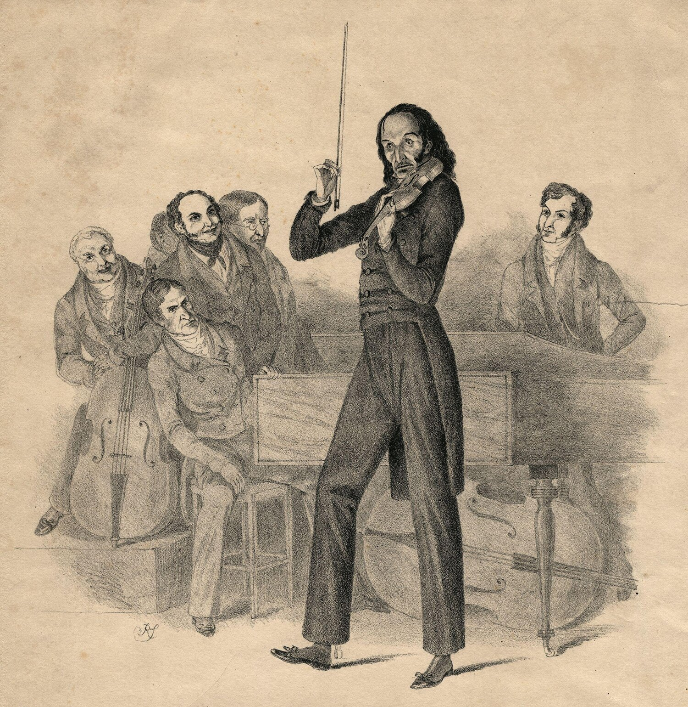
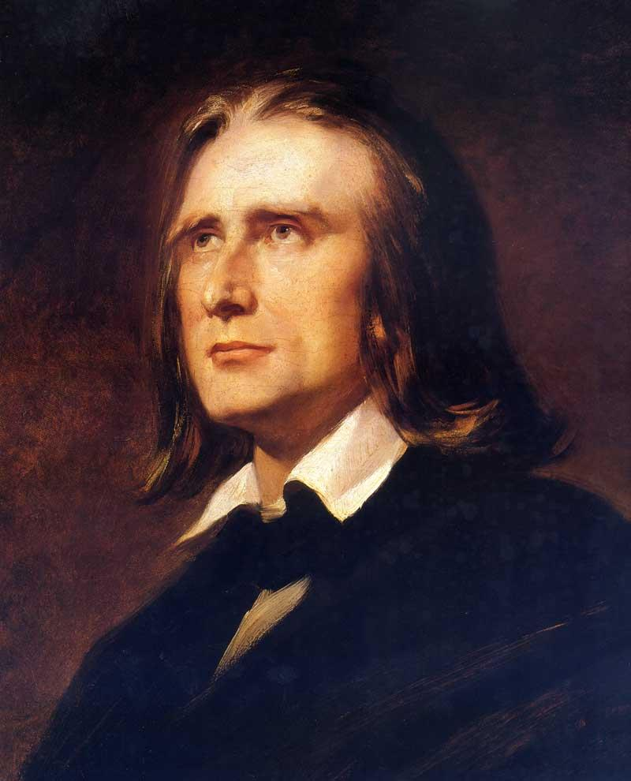
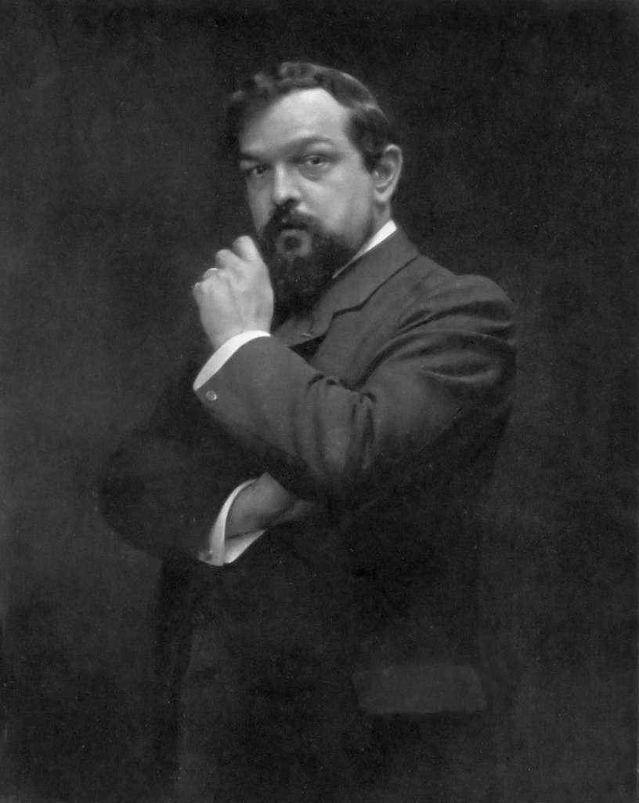

COMPOSITORES
Paganini
Se le llamaba "Paganini el violinista del diablo" a Niccolò Paganini por su extraordinaria destreza y control del violín. Sus interpretaciones de composiciones como "Capricho número 24" y "La campanella" fueron consideradas mágicas y sobrenaturales por su audiencia.

Leer más
Liszt
Franz Liszt (1811-1886) fue un músico y compositor húngaro conocido por su obra para el piano, especialmente su serie de música técnica y difícil, conocida como "Etudes d'execution transcendente".

Leer más
Claude Debussy
Claude Debussy (1862-1918) fue un compositor francés que desarrolló el estilo musical conocido como Impresionismo. Debussy buscaba crear un sonido diferente, más parecido a la pintura impresionista. Algunos de sus obras más famosas son "La mer", "Preludios" y "Clair de Lune".

Leer más
Antonio Vivaldi
Antonio Vivaldi (1678-1741) fue un compositor y violinista italiano. Vivaldi es mejor conocido por su trilogía "Las cuatro estaciones", un conjunto de tres obras musicales inspiradas en las cuatro estaciones del año. Vivaldi también es conocido por haber desarrollado el estilo Barroco en Venecia, donde trabajó en la música sacra y en la música de la corte.

Leer más
Pulsa este boton para volver atras: